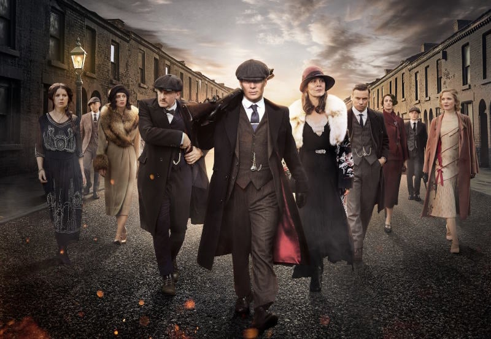

About Shelby
Thomas Shelby, the cunning and charismatic leader of the Peaky Blinders, is a strategic mastermind with a brooding intensity. His sharp wit, steely determination, and unwavering ambition make him a force to be reckoned with in Birmingham's underworld. His complex persona is layered with a mix of ruthlessness, loyalty to his family, and a desire for power, creating a magnetic yet enigmatic figure in the world of the Peaky Blinders.
The family
About the Boss
- Strategic Brilliance: He's a master tactician, always several steps ahead in planning and scheming
- Charismatic Leadership: Thomas has a magnetic presence that commands respect and loyalty from his followers.
- Intense Determination: His unwavering focus and determination drive him to achieve his goals, whatever the cost.
Thommy's Friends
Thomas Shelby's allies are a diverse tapestry, each woven into his intricate world for various purposes. Among them stands Arthur Shelby, his fiercely loyal older brother, a volatile force whose allegiance never wavers. Polly Gray, their aunt, serves as the shrewd matriarch and advisor, possessing a keen intellect and a maternal instinct for the family's well-being. Ada Shelby, Thomas's sister, brings a compassionate touch, advocating for causes close to her heart while maintaining ties that prove invaluable. Additionally, there are business alliances forged with characters like Alfie Solomons, a cunning and unpredictable Jewish gang leader, and other strategic partnerships crucial to the Peaky Blinders' rise to power. Each ally contributes their unique strengths to Thomas's arsenal, forming a network as intricate and formidable as the man himself. Click the link below to learn more about his army!